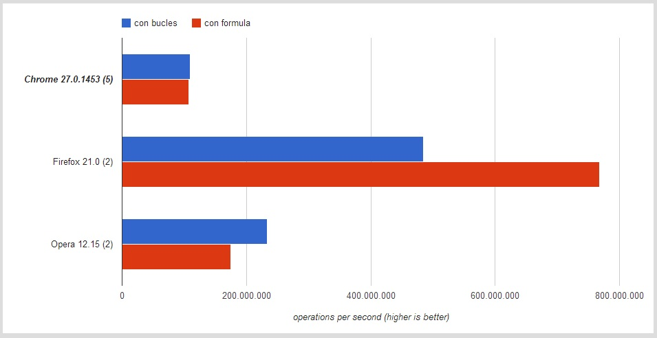
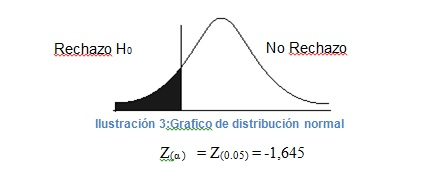

CASO DE ESTUDIO
El algoritmo de la sumatoria: Bucle
for (i; i <= n; i++) {
suma = suma + i;
}
El algoritmo de la sumatoria: Formula
suma = (n * (n + 1)) / 2;
Haciendo benchmarking: JSPERF
APLICACION DE LA PRUEBA DE HIPOTESIS DE UNA DIFERENCIA DE PROPORCIONES POBLACIONALES
DATOS RECOLECTADOS- Algoritmos por bucle (n1): 70 pruebas con el algoritmo resuelto. - Algoritmos por fórmula matemática (n2): 65 pruebas con el algoritmo resuelto.
PRUEBAS DE EFICIENCIA
1) Ho = π1 ≥ π2 : La proporción de la población 1 es mayor o igual que la 2. H1 = π1 < π2 : La proporción de la población 1 es menor que la 2. 2) α=0.05

USE A SPACEBAR OR ARROW KEYS TO NAVIGATE